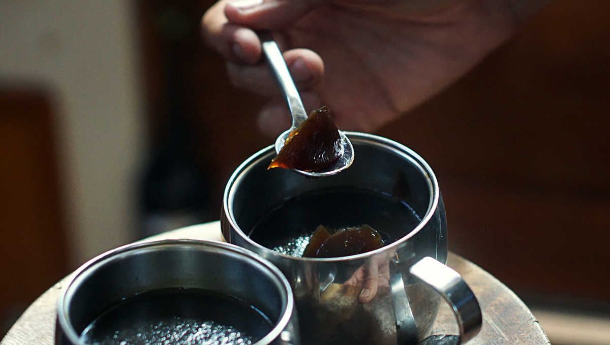

coffee jelly
2 servings — 40 minutes
Coffee jelly is a popular dessert and drink (you could say) that is served in coffee shops in Japan. It is very simple to make, it doesn't require refrigeration to become jelly and it is delicious!
The key ingredient in this recipe is kanten, or agar agar, a gelling agent that is algae based and that is widely available in asia. It is available in powder form, and also in sheets. Sheets can be melted in a liquid the same way as the powder form. Agar agar has no calories, and imparts no flavour.
You can use instant coffee as well for this recipe, using 30 ml of instant coffee per cup.
On Pino, we sometimes make the mix without a sweetener, and pour a spoonful on top afterwards.
Quick soy pudding
You can eat the coffee jelly as is, or you can add the cubes in another recipe like a coconut or soy milk pudding. It can also be used as a garnish for other desserts.
Also, I sometimes make a quick 'soy pudding' by heating some soy milk in a pan with some arrowroot starch. The mixture will thicken, it becomes pudding-like and is delicious over coffee jelly.
 coffee 350 ml
coffee 350 ml agar agar powder 4 g
agar agar powder 4 g maple syrup 30 ml
maple syrup 30 ml
jelly
- Brew a pot of coffee.
- Pour 350ml of coffee into a saucepan, add 30 ml of maple syrup and bring to a boil,
- Lower heat, then add 4 g (around 10 ml) of agar agar powder. Stir constantly for 2 minutes.
- Pour the mixture into two small bowls, or cups. Let stand for 30 minutes and up to 1 hour. It doesn't need to be refrigerated to solidify, but you can do that if you prefer it cold.